ℹ️ Qué es CaVeSal® IA
CaVeSal® IA es tu asistente clínico de inteligencia artificial, conectado transversalmente al resto del ecosistema CaVeSal® — hoy a la Calculadora Prenatal y a la Historia Clínica, y a futuro también a CaVeSal® GYN, Emergencia Obstétrica y Parto, y Neonatal. No es un chatbot genérico: responde apoyándose primero en las guías clínicas curadas específicamente para CaVeSal®, con respaldo en ACOG, FIGO, NICE, OMS, IADPSG y ATA, y solo busca en fuentes externas si se lo pedís explícitamente.
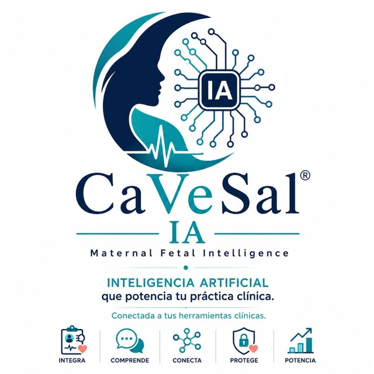
Los 5 pilares de CaVeSal® IA: Integra tus herramientas clínicas, Comprende el caso, Conecta los datos entre apps, Protege la información de tus pacientes, Potencia tu práctica.
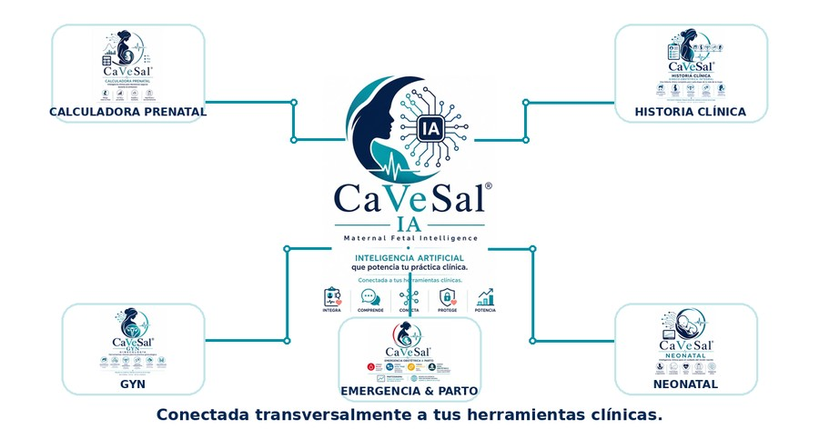
CaVeSal® IA no es una app aparte: es la capa de inteligencia que conecta a todas las herramientas del ecosistema.
🔑 Cómo activar tu cuenta
A diferencia de la Calculadora y la Historia Clínica (candado de activación dentro de la propia app), CaVeSal® IA se activa una sola vez desde ia.cavesal.app, con una cuenta personal por email — no por dispositivo.
Al comprar tu plan (ver Planes, cupos y recarga), recibís por email un código de activación.
Entrá a ia.cavesal.app, ingresá el código, tu email, y elegí un PIN (el que quieras, para identificarte después).
De ahí en más, usás CaVeSal® IA con tu email y tu PIN desde cualquier dispositivo — PC del consultorio, celular, tablet — sin volver a ingresar el código. El código se canjea una sola vez.
Elegís el idioma de respuesta (español, inglés o portugués) una sola vez, al activar tu cuenta.
📋 Acceder desde la Historia Clínica
Abrí la ficha de la paciente y tocá "Analizar con CaVeSal® IA" — está entre los botones de exportación (PDF, Word, Email, WhatsApp, Imprimir, Enviar a Calculadora), identificado con el ícono 🔒 y en color violeta.
Se abre la pantalla de chat con los datos de esa paciente puntual ya cargados como contexto — nunca de toda tu base de pacientes.
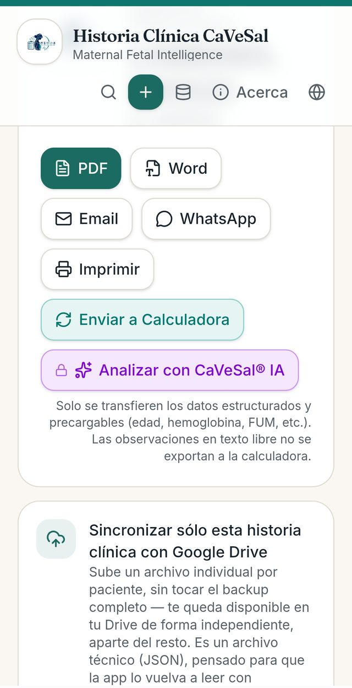
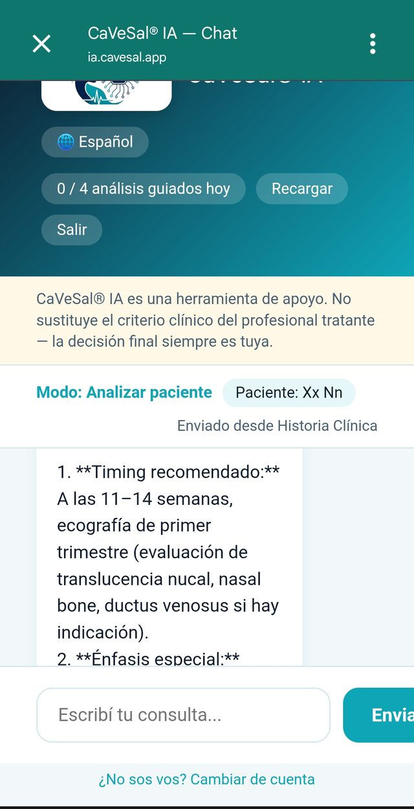
Desde Historia Clínica, la paciente se identifica por su nombre en el chat.
📊 Acceder desde la Calculadora Prenatal
Calculá el caso normalmente y andá a la pestaña "Resultado".
En la tarjeta "Analizar con CaVeSal® IA" (debajo del Riesgo Global y los datos de EG/FPP/IMC), tocá "Analizar 🔒" para enviar el caso a una segunda lectura clínica.
Se abre el chat con el cálculo actual ya cargado como contexto — riesgos calculados, hallazgos por módulo (Doppler, biometría, DMG, etc.) y edad gestacional.
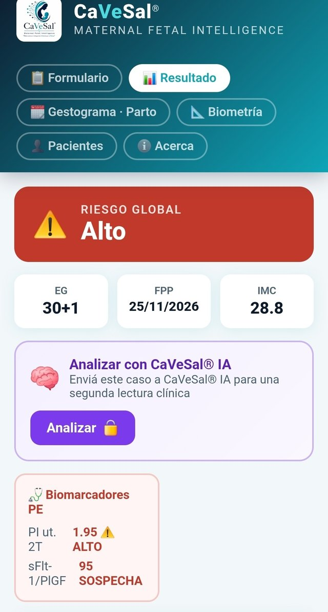
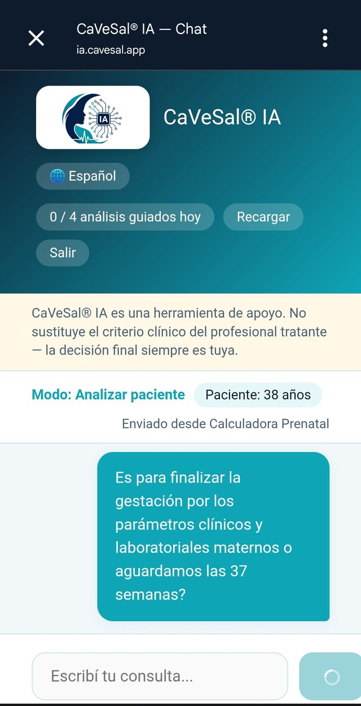
💬 La pantalla de chat: elementos de la interfaz
Selector de idioma 🌐: cambia el idioma de respuesta (Español / English / Português) en cualquier momento de la conversación.
Contador de cupo ("0 / 4 análisis guiados hoy"): muestra cuánto cupo diario te queda según tu plan — se resetea automáticamente cada día.
"Recargar": comprá cupo extra si te quedaste sin consultas o análisis por hoy (ver Planes, cupos y recarga).
"Salir": cierra la sesión de CaVeSal® IA.
Banner de disclaimer: siempre visible arriba de la conversación — "CaVeSal® IA es una herramienta de apoyo. No sustituye el criterio clínico del profesional tratante — la decisión final siempre es tuya."
Indicador de modo y paciente: muestra en qué modo estás trabajando ("Modo: Analizar paciente") y el identificador de la paciente activa (nombre o edad, según el origen), con la etiqueta de dónde vino el dato ("Enviado desde Historia Clínica" / "Enviado desde Calculadora Prenatal").
Conversación: tus mensajes aparecen a la derecha (burbuja teal), las respuestas de CaVeSal® IA a la izquierda (fondo blanco), con formato de texto enriquecido (negritas, listas) para facilitar la lectura rápida en consulta.
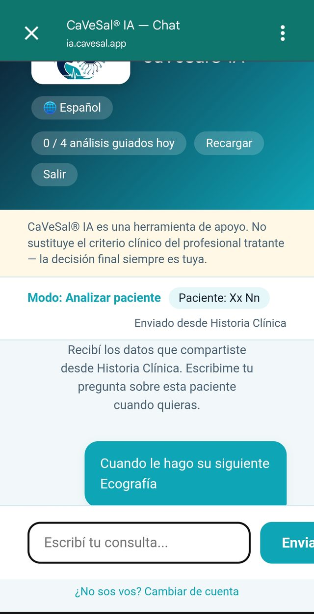
🧭 Modos de interacción
Consultar (chatbot libre): hacé preguntas puntuales durante la consulta, sin necesidad de enviar el caso completo de una paciente — respuesta concisa y directa.
Analizar (agente guiado): el modo que activás con el botón desde la Calculadora o la Historia Clínica. CaVeSal® IA revisa el caso puntual que le enviaste y, si hace falta más contexto, te lo pide antes de responder en firme — nunca asume datos que no tiene.
Investigar (búsqueda externa): solo se activa si vos lo pedís explícitamente (ej. "buscá si hay una guía actualizada"). CaVeSal® IA deja claro cuándo una respuesta viene de una fuente externa, distinta de las guías curadas.
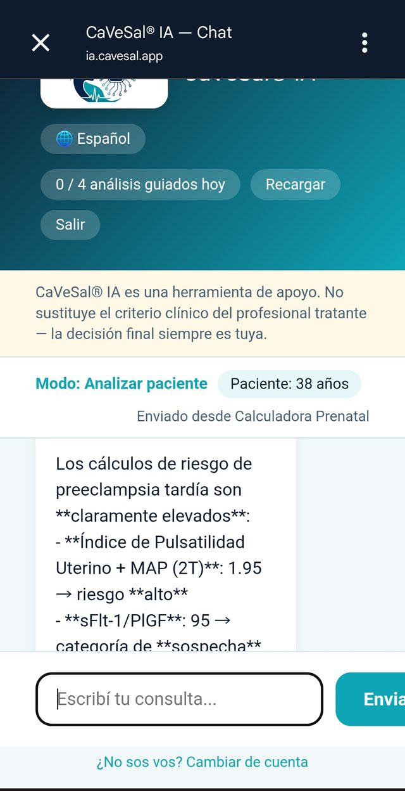
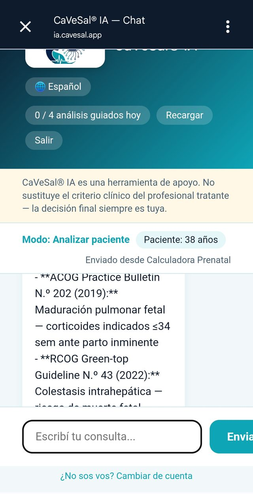
Cada respuesta cita su fuente (organismo + número + año), para que puedas verificarla vos mismo.
🩺 Ejemplo real: un caso de riesgo elevado
Este intercambio muestra el modo Analizar en acción, sobre un caso enviado desde la Calculadora con Riesgo Global Alto (PI uterino + MAP 2T elevado, sFlt-1/PlGF en rango de sospecha).
El médico pregunta si conviene finalizar la gestación por los parámetros clínicos y laboratoriales maternos, o aguardar las 37 semanas.
CaVeSal® IA responde usando la edad gestacional real del caso (no una respuesta genérica): señala que los biomarcadores sugieren un perfil materno de alto riesgo de preeclampsia tardía en las próximas 1–3 semanas, y aclara de inmediato que la decisión de interrupción no depende solo del riesgo biomarcador-dependiente, sino del cuadro clínico completo — devolviendo la decisión final al criterio del médico tratante.
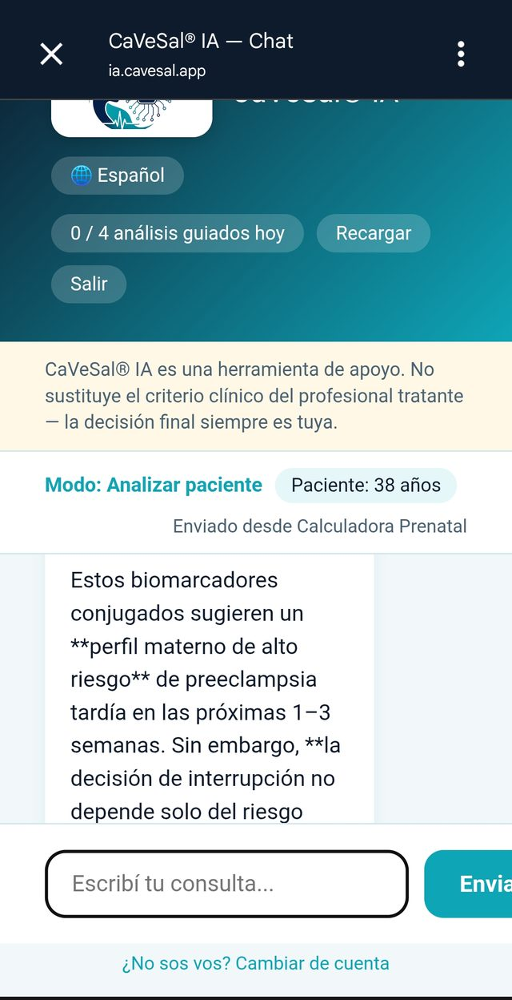
La respuesta incorpora el dato de edad gestacional y los hallazgos ya calculados por la Calculadora — no hace falta repetírselos.
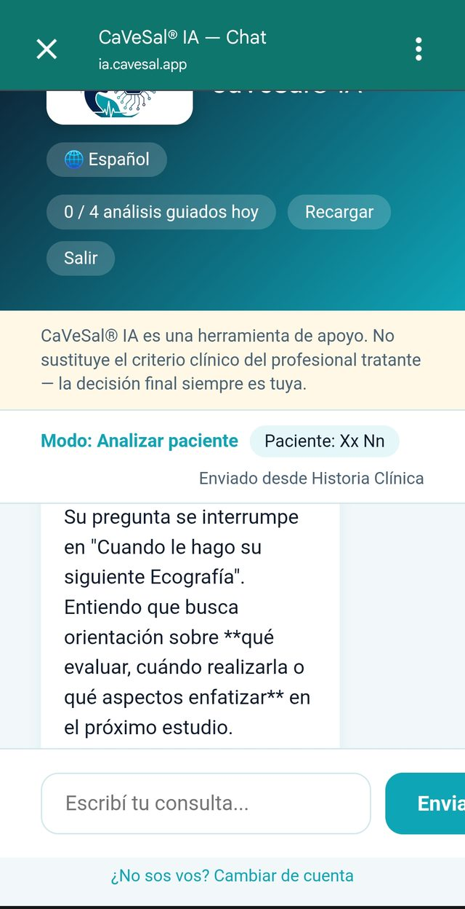
🔒 Qué datos se envían y qué pasa con ellos
Solo se comparte lo que vos decidís enviar en cada click — desde la Calculadora, el cálculo actual; desde la Historia Clínica, los datos estructurados de la ficha abierta en ese momento.
Las observaciones en texto libre de la Historia Clínica nunca se exportan.
Desde la Calculadora, la paciente se identifica solo por edad — nunca nombre ni documento. Desde Historia Clínica, sí viaja el nombre, porque es información que vos ya tenés cargada y controlás en tu propio dispositivo.
Los datos de cada consulta a CaVeSal® IA nunca quedan almacenados: cada interacción es puntual y efímera — se analiza y se descarta, no queda historial guardado en el servidor.
💳 Planes, cupos y recarga
| Plan | Consultas/día (chatbot) | Análisis guiados/día | Precio |
|---|---|---|---|
| Pro | 20 | 4 | USD 34,90/año |
| Premium | 50 | 8 | USD 59,90/año |
| Premium Plus | 85 | 15 | USD 99,90/año |
Pago único anual, sin renovación automática. Licencia personal (por email + PIN que vos elegís) — no por dispositivo, así que la usás desde tu PC del consultorio y tu celular con la misma cuenta.
Tu cupo se resetea automáticamente cada día.
¿Se te acaba el cupo del día y necesitás seguir? Tocá "Recargar" en la pantalla de chat: USD 4,90 → +10 consultas + 2 análisis guiados. Ese saldo no vence y se usa recién cuando se agota tu cupo diario normal.
🔗 Más recursos CaVeSal®
¿Querés conocer el resto de la suite?
¿Dudas sobre alguna función? Escribinos a drverasalerno@gmail.com · Última actualización: septiembre de 2026